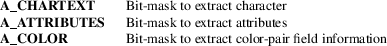

inch, winch, mvinch, mvwinch − get a character and attributes from a curses window
#include <curses.h>
chtype
inch(void);
chtype winch(WINDOW *win);
chtype
mvinch(int y, int x);
chtype mvwinch(WINDOW *win, int
y, int x);
These routines return the character, of type chtype, at the current position in the named window. If any attributes are set for that position, their values are OR’ed into the value returned. Constants defined in <curses.h> can be used with the & (logical AND) operator to extract the character or attributes alone.
Attributes
The following bit-masks may be AND-ed with characters
returned by winch.

Functions with a “mv” prefix first perform a cursor movement using wmove, and return an error if the position is outside the window, or if the window pointer is null.
The winch function does not return an error if the window contains characters larger than 8-bits (255). Only the low-order 8 bits of the character are used by winch.
Note that all of these routines may be macros.
These functions are described in the XSI Curses standard, Issue 4.
Very old systems (before standardization) provide a different function with the same name:
|
• |
The winch function was part of the original BSD curses library, which stored a 7-bit character combined with the standout attribute. |
In BSD curses, winch returned only the character (as an integer) with the standout attribute removed.
|
• |
System V curses added support for several video attributes which could be combined with characters in the window. |
Reflecting this improvement, the function was altered to return the character combined with all video attributes in a chtype value.
X/Open Curses does not specify the size and layout of attributes, color and character values in chtype; it is implementation-dependent. This implementation uses 8 bits for character values. An application using more bits, e.g., a Unicode value, should use the wide-character equivalents to these functions.
curses(3X)
gives an overview of the WINDOW and chtype data types.
curs_attr(3X)
goes into more detail, pointing out portability problems and constraints on the use of chtype for returning window information.
curs_in_wch(3X)
describes comparable functions for the wide-character (ncursesw) library.